SoR Magazine #1 · Koude Oorlog · tot slot
Tijdlijn
Van de verdeling van Duitsland tot het einde van de Sovjet-Unie: 25 momenten uit de Koude Oorlog, met de muziek die erbij hoort.
Scroll, sleep of gebruik de pijltjes →
Een verdeelde wereld
De Tweede Wereldoorlog is voorbij. Duitsland en Berlijn worden in vier zones verdeeld. Amerika en de Sovjet-Unie zijn van bondgenoten tegenstanders geworden.
Het IJzeren Gordijn
Winston Churchill zegt in Fulton, in Amerika, dat er een IJzeren Gordijn door Europa loopt.
Lees Rock achter het IJzeren Gordijn →De luchtbrug
De Sovjet-Unie sluit West-Berlijn af. Bijna een jaar lang brengen westerse vliegtuigen voedsel en kolen naar de stad.
De NAVO en de bom
Amerika en West-Europa richten de NAVO op. In augustus test de Sovjet-Unie haar eerste atoombom.
Lees Leven met de bom →Oorlog in Korea
Noord-Korea valt Zuid-Korea binnen. Drie jaar lang wordt er gevochten; daarna komt er een wapenstilstand, geen vrede.
Stalin sterft
Sovjetleider Jozef Stalin sterft in maart. In juni slaan Sovjettanks een opstand van arbeiders in Oost-Duitsland neer.
Jazz op de radio
Willis Conover begint zijn jazzprogramma op de Voice of America, voor luisteraars achter het IJzeren Gordijn.
Gillespie op tournee
Dizzy Gillespie reist met een gemengde bigband langs het Midden-Oosten en de Balkan, betaald door de Amerikaanse regering. In hetzelfde jaar slaat de Sovjet-Unie de opstand in Hongarije neer.
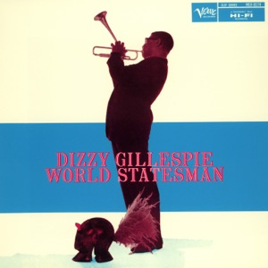
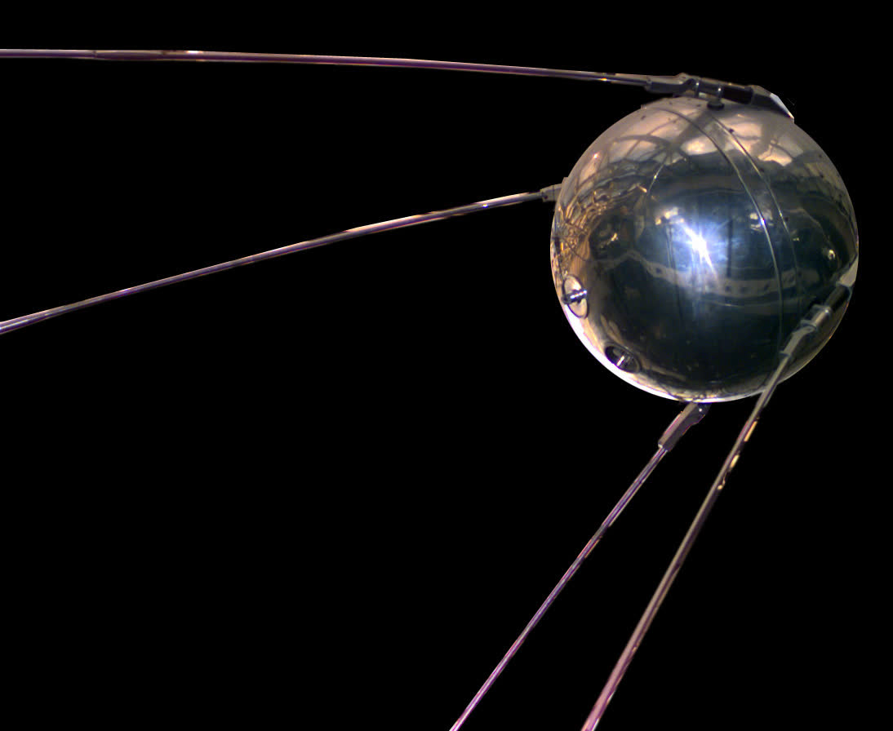
Spoetnik
De Sovjet-Unie schiet de eerste kunstmaan de ruimte in. Amerika schrikt.
Lees We Didn't Start the Fire →Een vrolijk liedje over het einde
Tom Lehrer maakt een grap van de bom: we gaan er allemaal tegelijk aan.
De Muur
In de nacht van 13 augustus begint Oost-Duitsland met de bouw van een muur dwars door Berlijn.
Dertien dagen
De Cubacrisis: de wereld staat in oktober op de rand van een kernoorlog.
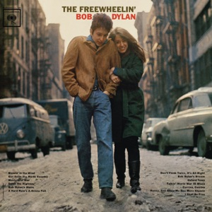
Tanks in Praag
De Sovjet-Unie maakt een einde aan de Praagse Lente. Een paar weken later begint The Plastic People of the Universe.
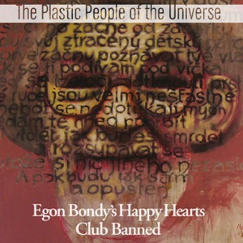
Niet meer welkom
Wolf Biermann mag na een tournee in West-Duitsland niet meer terug naar de DDR.
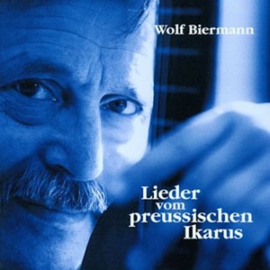
Helden bij de Muur
David Bowie neemt Heroes op in West-Berlijn, een paar honderd meter van de Muur.
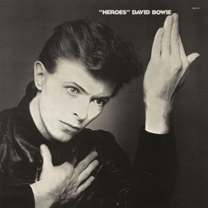
Nieuwe raketten
De NAVO besluit tot nieuwe kernraketten in Europa. In december valt de Sovjet-Unie Afghanistan binnen.
Lees Nederpop in de Koude Oorlog →De bom op nummer één
Doe Maar staat vier weken op nummer één met een ska-hit over de kruisraketten.
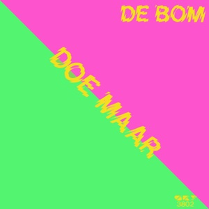
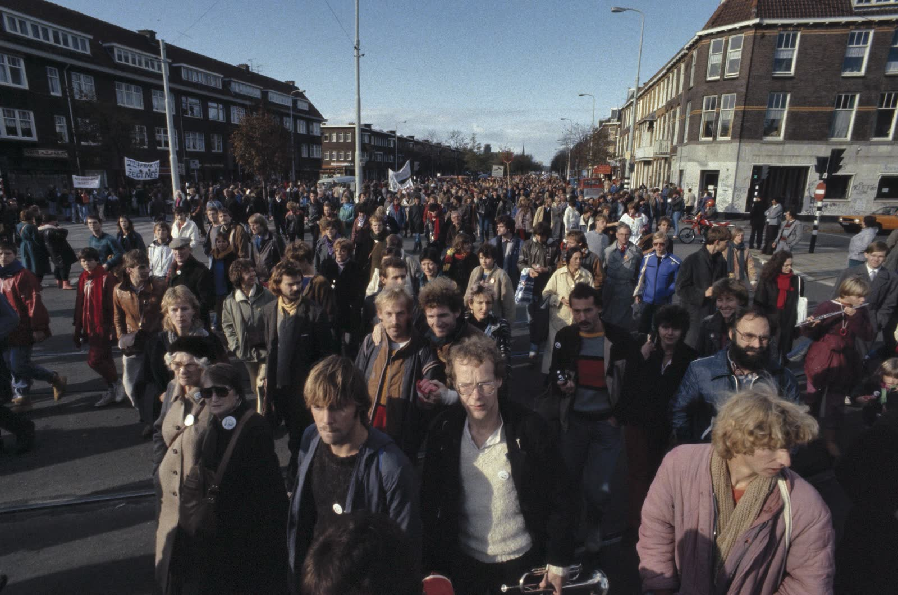
Een half miljoen in Den Haag
Ongeveer 550.000 mensen demonstreren in Den Haag tegen de kruisraketten. In West-Duitsland staat 99 Luftballons op nummer één.
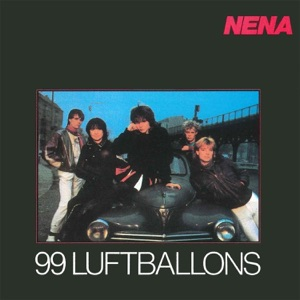
Gorbatsjov
Michail Gorbatsjov wordt de leider van de Sovjet-Unie. Sting zingt Russians.
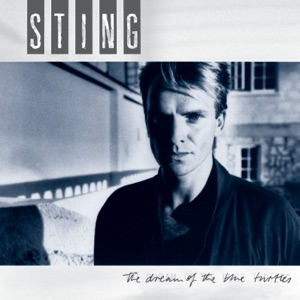
Wij willen verandering
Kino zingt Хочу перемен. Reagan en Gorbatsjov praten in Reykjavik over het afschaffen van hun kernwapens.
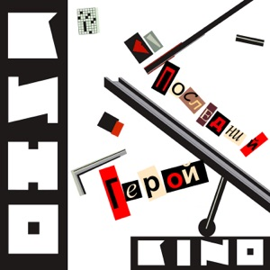
Het INF-verdrag
Amerika en de Sovjet-Unie spreken af dat de raketten voor de middellange afstand verdwijnen. De kruisraketten komen nooit naar Woensdrecht.
Lees Nederpop in de Koude Oorlog →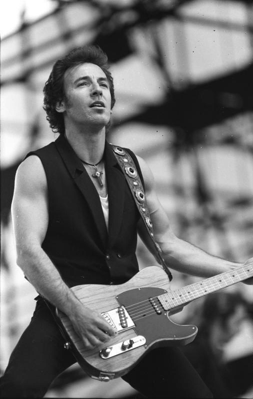
Springsteen in Oost-Berlijn
Meer dan 300.000 mensen zien Bruce Springsteen spelen in Oost-Berlijn.
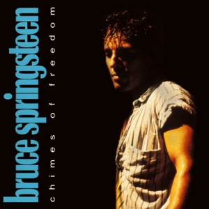
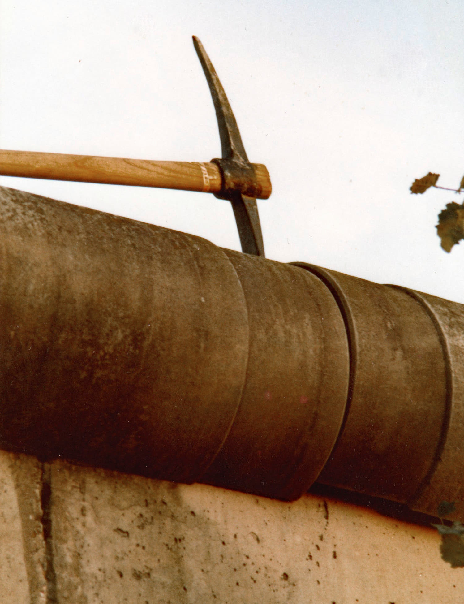
De Muur valt
Op 9 november gaat de grens in Berlijn open. Zeven weken eerder kwam We Didn't Start the Fire uit.
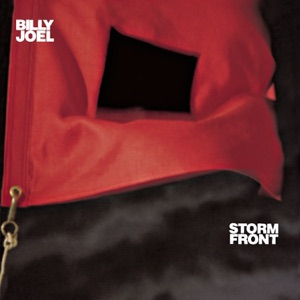
Wind of Change
Duitsland wordt op 3 oktober weer één land. Scorpions zingen over een wind van verandering.
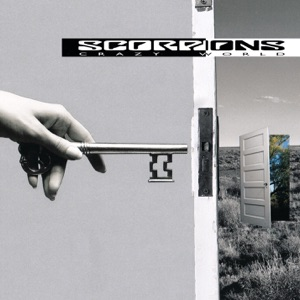
Het einde
In december houdt de Sovjet-Unie op te bestaan. De Koude Oorlog is voorbij.